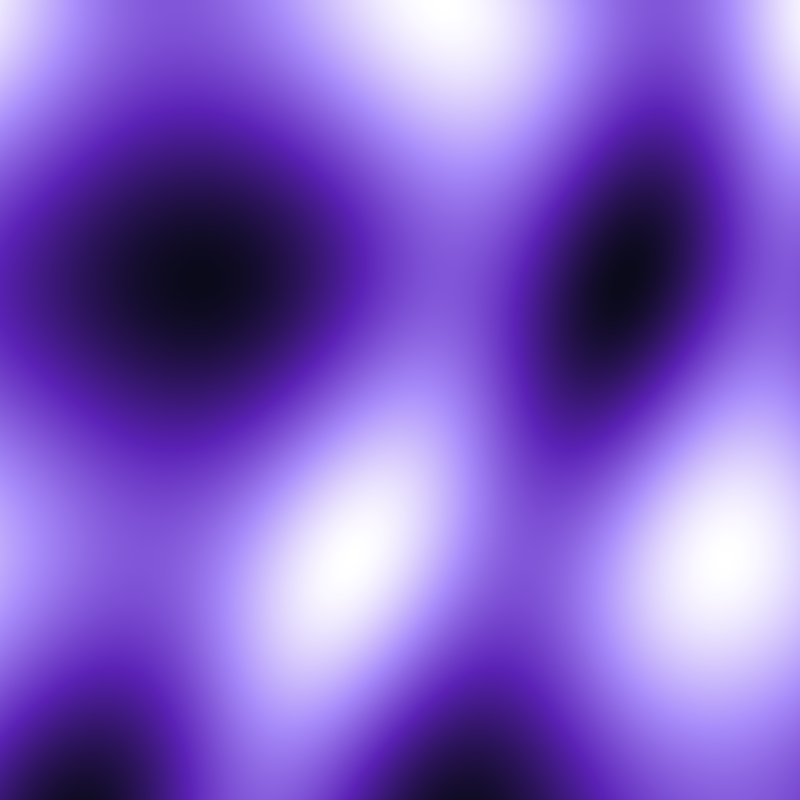
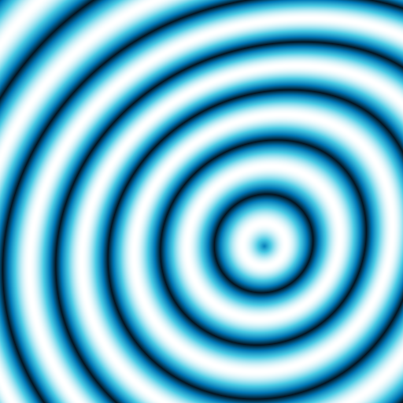

AI-Image-Generator: the contact sheet
I am Gavin K. I wrote one Python file, generate.py, that turns a text prompt into a PNG. This page is my contact sheet for it: the frames below are the actual files the program wrote when I ran it for this rebuild, with the prompt, style, size, and byte count written under each one the way I would write them in pencil on a sheet in the darkroom.


Frames 1 to 3The sheet
Three prompts, three styles, three different sizes on the page because the files themselves are different sizes. I did not retouch, crop, or re-encode any of them. I copied generate.py to a scratch folder, ran it there, and moved the PNGs it wrote into assets/ in this site folder under the names the program gave them.


Notes on the processHow a prompt becomes a picture
The hash contract is the whole program. I take the SHA-256 hash of the prompt text. Bytes 0 to 7 seed the random number generator. Byte 8 picks the palette. Same prompt, same hash, same seed, same picture, every time, on any machine running the same code. Change one letter in the prompt and you get a different hash and a different picture.
def render(prompt, style, size):
# The prompt hash is the whole identity of the image. I seed the RNG
# from digest bytes 0 to 7, and I let byte 8 pick the palette on its
# own, so the palette choice does not depend on how many numbers the
# RNG happened to draw first. I keep those two uses separate. If I
# merged them, I would change every existing prompt's image.
digest = hashlib.sha256(prompt.encode()).digest()
rng = random.Random(int.from_bytes(digest[:8], "big"))
palette = PALETTES[digest[8] % len(PALETTES)]
Source: generate.py, lines 60 to 68, at the head commit for this rebuild. I keep the RNG seed and the palette pick in separate steps on purpose, so the palette does not depend on how many numbers the RNG drew first.
The three styles
plasma, the default
Four seeded sine waves averaged together, shifted into the 0 to 1 range, then mapped through the palette. Soft fields. This is frame 1.
--style plasma
waves
I feed the plasma value back into a sine, so the wave fronts bend instead of running straight. The result is interference bands that curve around the field. This is frame 2.
--style waves
orbit
A radial falloff around a seeded center. I take the absolute value of the sine of the distance, which folds each wave back on itself, so the falloff reads as tight rings. This is frame 3.
--style orbit
All three styles draw their four field seeds and their orbit center in the same fixed order, even when a style does not use the center. If I drew values only when a style needed them, switching styles on one prompt would change the field too, and comparing styles would stop meaning anything.
The four palettes
Byte 8 of the hash, taken modulo 4, picks one of these. I drew each strip from the literal values in the PALETTES list in generate.py and printed the RGB numbers under it, so anyone can open the file and check my strips against the code, stop by stop. Each palette runs from its darkest stop toward white, because the color function walks the list in order as the field value rises.
Violet nebula
Deep ocean
Ember
Matrix green
After the field is built, every pixel is computed in plain Python, one row at a time, and the rows go into a PNG encoder I wrote by hand with struct and zlib from the standard library. No image library wrote these files. I did, through that encoder.
Lab notesThe hand drawn sheets
Before and alongside the code, I drew the project out on paper style sheets and kept them in the repo. These are those repo files, not outputs of generate.py, and I caption them as what they are. The banner and logo sit above them because they are the marks I made for the repo itself.


In the labRun it
You need Python 3 and nothing else to install. Clone the repo, then run the file. The transcript below is not an example I typed up to look right. It is the run I made for this page, on 2026-10-31, against head commit 575d5fcf13732af2357c6ed014489be9bfc74b1a, and the three Wrote lines are the lines the program printed to me. Those runs made frames 1 to 3 above.
# My actual runs for this page, 2026-10-31, head 575d5fcf13732af2357c6ed014489be9bfc74b1a
$ python3 generate.py "a violet nebula over a dark ocean"
Wrote image-68f08cce2c.png (512x512, style=plasma)
$ python3 generate.py "geometric sunrise" --style waves --size 800
Wrote image-416de0b5ae.png (800x800, style=waves)
$ python3 generate.py "circuit dreams" --style orbit -o dreams.png
Wrote dreams.png (512x512, style=orbit)
| Option | What it does |
|---|---|
| --style | plasma, waves, or orbit. Default is plasma. |
| --size | Square size in pixels, from 16 to 2048. Default is 512. A size outside that range exits with an error before any work starts. |
| -o / --output | Output file name. Without it, the name comes from the first 10 characters of the prompt hash, so the same prompt overwrites its own old file instead of piling up copies. |
Cost grows with the square of the size, because every pixel is computed in Python. That is why the size cap is checked first: a typo like 20000 would otherwise run for a long time before failing.
Last note on the sheetStatus, stated plainly
What this program is. A single Python file that runs fully offline. It makes no network call and takes no API key. Its output is procedural art from a hash of the prompt: math drawn pixel by pixel, not photographs, and not model output.
About the name in my README. The first line of my README names Google AI Studio Imagen v4 Ultra. That name does not describe a call the code makes. generate.py does not call Imagen, Google, or any other service. If you read the file top to bottom, you will find hashlib, random, math, struct, and zlib, and no network code at all. I would rather state that here, on the sheet, than let the README line imply a service behind a program that has none.
What to expect from it. Give it a prompt whose picture you can predict, like a cat on a roof, and it will not draw that cat. It will draw the field that prompt hashes to, in the palette byte 8 selects. That limit is the point of the project for me: the prompt is a seed, not a description the program understands.